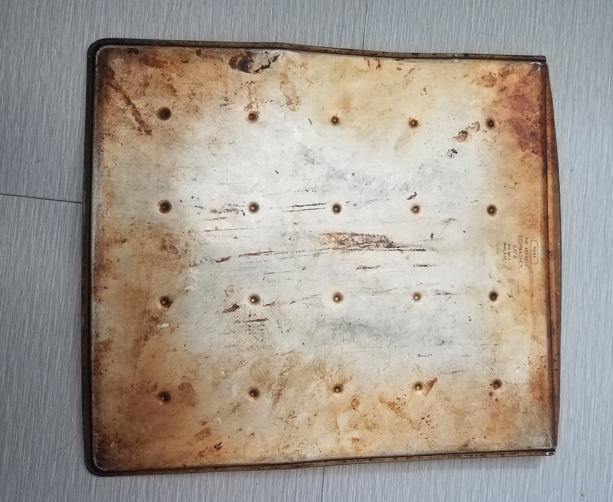
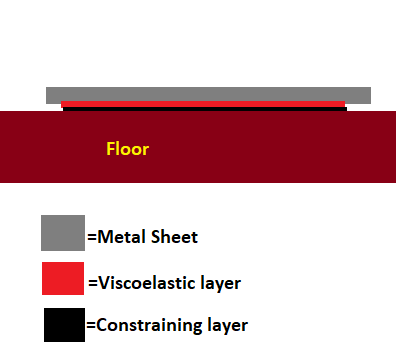

Sound Lab
Instructions: you will be building two prototypes of constrained-layer damping. Find 2 members of your group that have access to a cookie sheet or metal sheet
- Task 1: Go to this link to access a sound wave amplitude application. This application measures the "loudness" of your sound.
- Task 2: For the 2 members of the group that have a metal sheet, turn the metal sheets so that it is upside down on the floor (preferrably uncarpeted).

- Task 3: Find a metal spoon and drop from should height onto the metal sheet. Record the maximum sound amplitude in table 1
- Task 4: Using materials in your homes, work together to build a CLD for each pan. The second design should take into account what you learned from the first design as it will be the "improved model."

- Task 5: Record the amplitude for the metal sheets with the CLD table 1
- Task 6: Complete table 1
- Task 7: Answer Reflection questions
- Task 8: Be prepared to share your designs